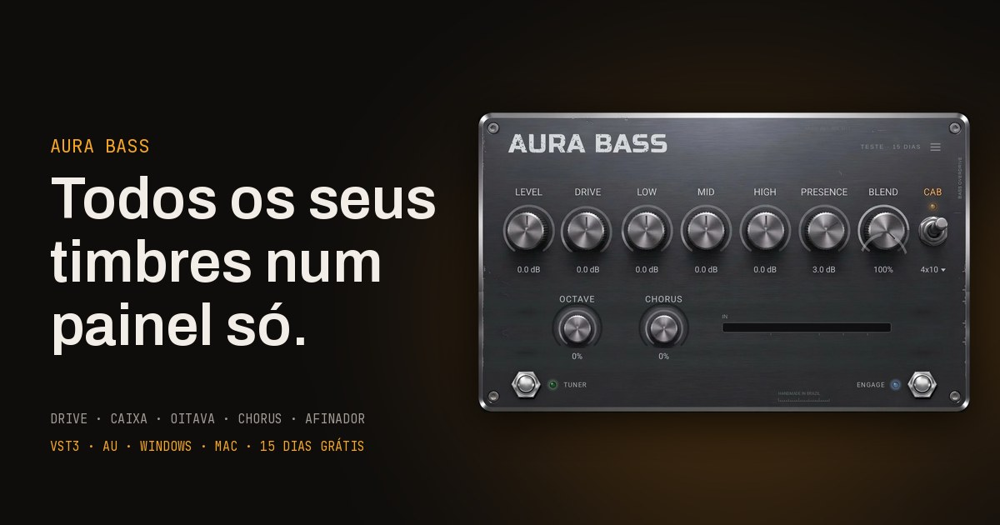

AURA Synth BassSintetizador de baixo para tocar ao vivo · App + VST3 + AUTeste grátis de 15 dias VER PLUGIN →Baixar
 AURA BassDrive, EQ, caixa, oitava, chorus e afinador · VST3 + AU + programaTeste grátis de 15 dias VER PLUGIN →Baixar